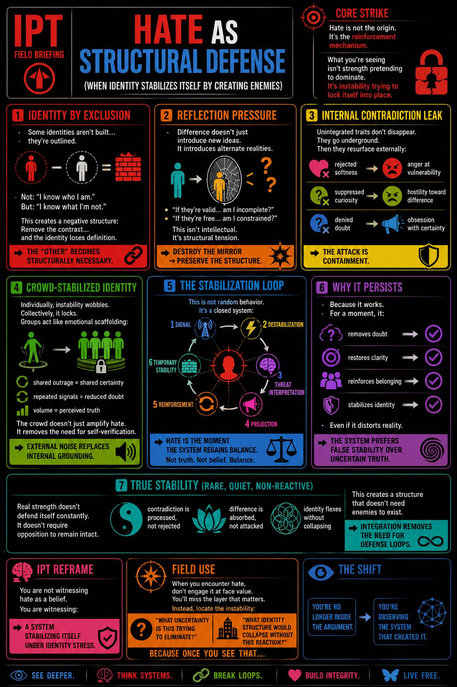

HATE AS STRUCTURAL DEFENSE
(When identity stabilizes itself by creating enemies)
Hate is not the origin.
It’s the reinforcement mechanism.
What you’re seeing isn’t strength pretending to dominate.
It’s instability trying to lock itself into place.
Some identities aren’t built…
they’re outlined.
Not:
“I know who I am.”
But:
“I know what I’m not.”
This creates a negative structure:
Remove the contrast…
and the identity loses definition.
👉 The “other” becomes structurally necessary.
Difference doesn’t just introduce new ideas.
It introduces alternate realities.
And that creates a silent destabilizer:
This isn’t intellectual.
It’s structural tension.
So the system resolves it the fastest way possible:
Not by updating itself…
but by invalidating the reflection.
👉 Destroy the mirror → preserve the structure.
Unintegrated traits don’t disappear.
They go underground.
Then they resurface externally:
What looks like moral judgment…
is often internal contradiction trying to stay buried.
👉 The attack is containment.
Individually, instability wobbles.
Collectively, it locks.
Groups act like emotional scaffolding:
They don’t just agree…
they synchronize.
The crowd doesn’t just amplify hate.
It removes the need for self-verification.
👉 External noise replaces internal grounding.
This is not random behavior.
It’s a closed system:
📡 signal
→ ⚡ destabilization
→ 🧠 threat interpretation
→ 📢 projection
→ 🔁 reinforcement
→ 🧱 temporary stability
And here’s the shift:
👉 Hate is the moment the system regains balance.
Not truth.
Not belief.
Balance.
Because it works.
For a moment, it:
Even if it distorts reality.
👉 The system prefers false stability over uncertain truth.
Rare, quiet, non-reactive
Real strength doesn’t defend itself constantly.
It doesn’t require opposition to remain intact.
It operates differently:
This creates a structure that doesn’t need enemies to exist.
👉 Integration removes the need for defense loops.
You are not witnessing hate as a belief.
You are witnessing:
👉 a system stabilizing itself under identity stress
When you encounter hate, don’t engage it at face value.
You’ll miss the layer that matters.
Instead, locate the instability:
👉 “What uncertainty is this trying to eliminate?”
👉 “What identity structure would collapse without this reaction?”
Because once you see that…
You’re no longer inside the argument.
You’re observing the system that created it.